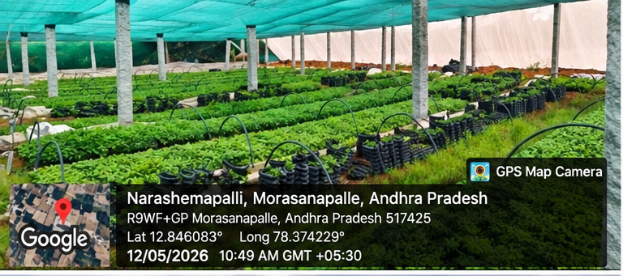
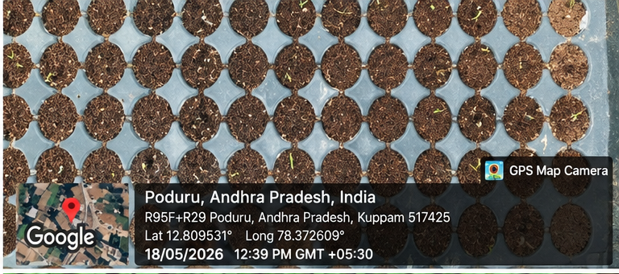
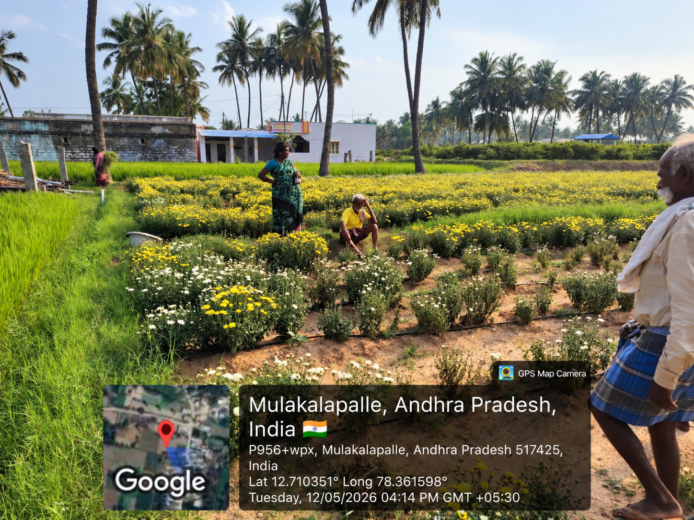
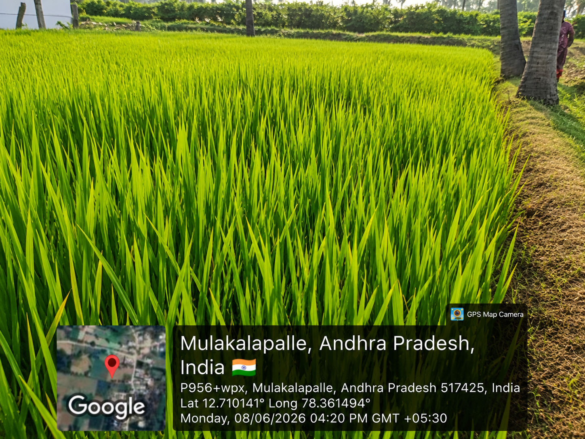
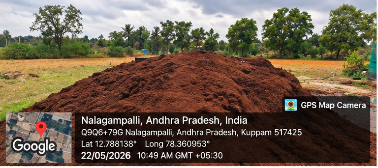
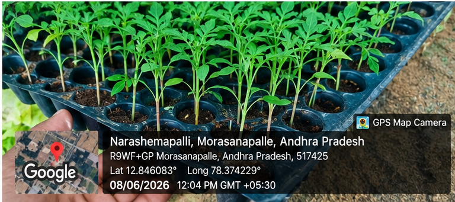
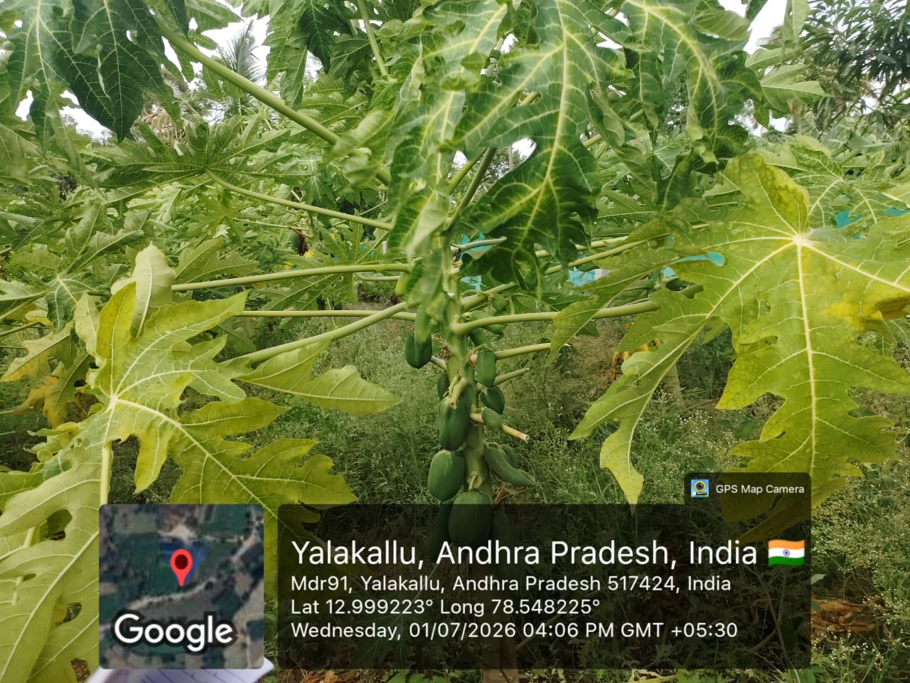
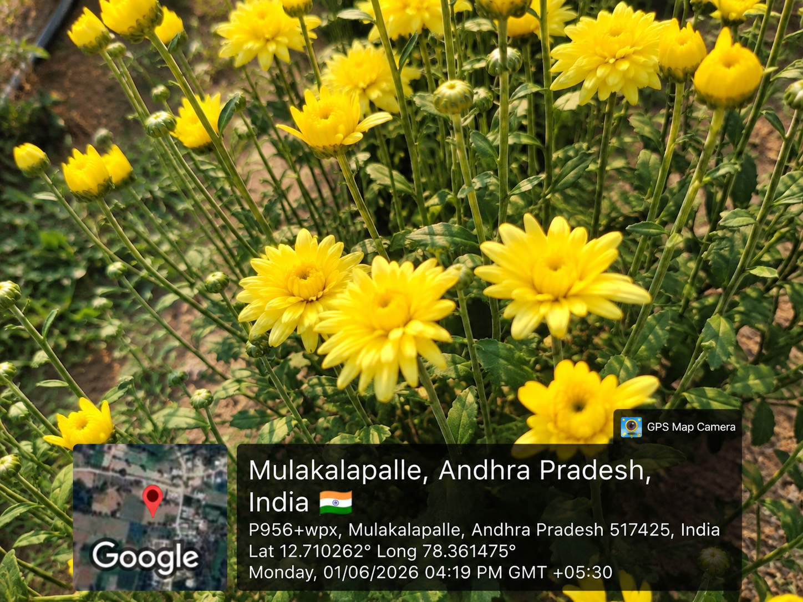
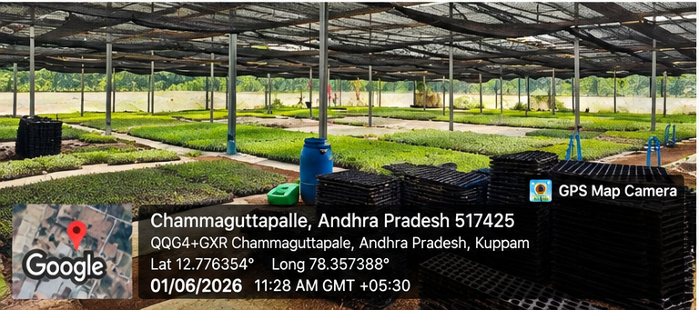
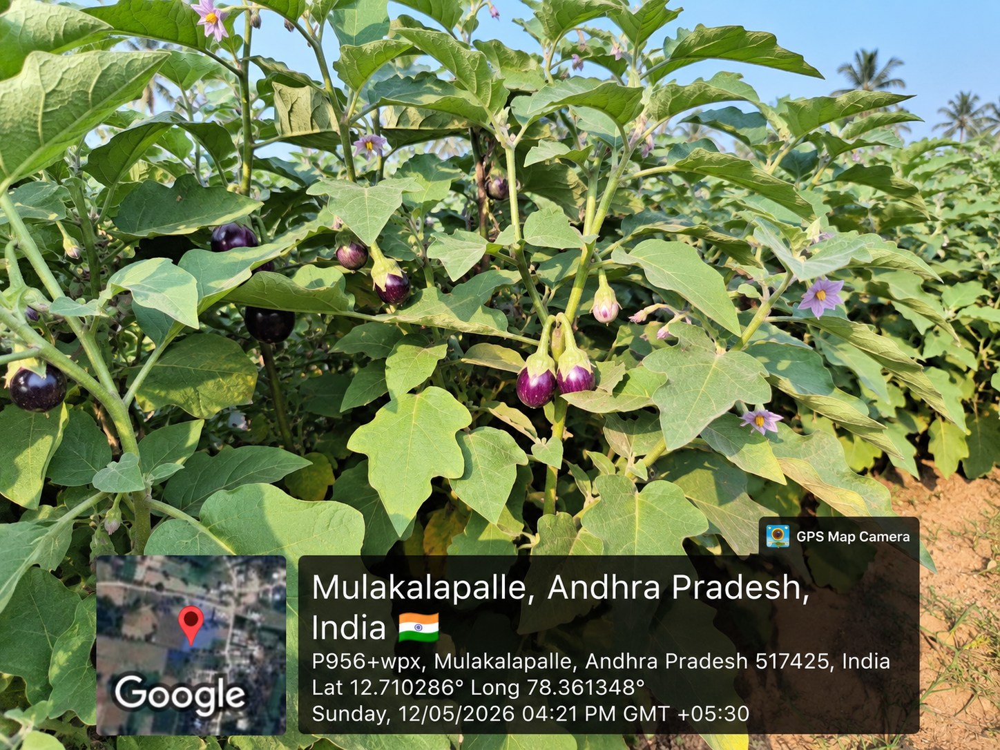

🍅
Tomato
Warm-season vegetable
A simple digital guide for horticulture, nursery care, water saving, composting and natural pest management.
Start with simple, practical information.
Warm-season vegetable
Popular vegetable crop
Long-duration vegetable
Important fruit crop
Choose healthy, disease-free seeds and planting material.
Use a clean, well-drained mix with organic matter.
Keep media moist, but avoid waterlogging.
Monitor pests, provide light and harden plants before transplanting.
Use drip or targeted watering. Water near roots and avoid unnecessary wetting of leaves.
Convert suitable plant residues and organic waste into useful compost instead of burning it.
Regularly inspect leaves and use integrated, low-risk methods before relying on chemical control.
Cover soil with suitable organic material to reduce evaporation and suppress weeds.
Collect and use rainwater where practical. Keep storage clean and safe.
Separate useful organic waste and return it to the soil through composting.
✓ Your checklist is saved on this device.

Nursery Visit
Potting Media Study
Farmer Interaction
Field Survey
Eco Practices
Community Awareness
Fruits check
Flowers
Horticulture Practices
Vegetables